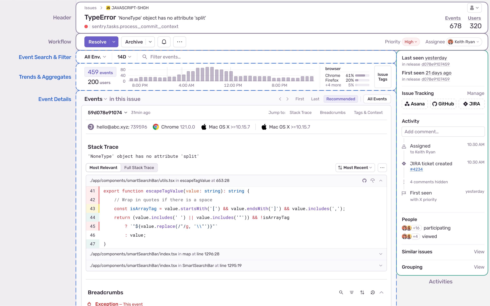

Every time your code throws an exception, Sentry captures it: the full stack trace, the context, the breadcrumbs, and routes it through a pipeline to the right team. Click any colored field in the event below to understand what it means.
💡 טיפ: העבירו את העכבר (או הקישו באצבע) מעל מילים מקצועיות המסומנות בקו מקווקו צהוב, כדי לראות הסבר מלא בעברית.

Sentry captures more than crashes:
Error — unhandled exception or explicit capture Performance — slow transaction (N+1 queries, slow DB) Session Replay — video of what the user did before the crash Cron Monitor — missed or failed scheduled job Release Health — crash-free session rate per deployAll types share the same interface: an SDK call → an event JSON → the pipeline.
Without grouping, one bug crashing 10 000 times would flood your inbox. Sentry's deduplication engine hashes the fingerprint of every event and merges events with the same fingerprint into a single Issue. The counter on the issue shows how many times it fired. You can override the fingerprint in code: scope.set_fingerprint(["my-custom-group"]).
The default fingerprint is derived from: exception type + culprit file/line. Minified JavaScript? Sentry un-minifies it first using source maps.
Sentry has two alert types:
Issue Alerts — trigger on conditions: "new issue", "regression", "issue seen > 100×/hour in production". Actions: Slack, PagerDuty, email, webhook.
Metric Alerts — trigger on numeric thresholds: error rate > 5%, p95 latency > 2 s, crash-free sessions < 99.5%. They use a sliding window and a warning + critical level so you get a heads-up before the pager goes off.
init() call wires up global error handlers. Unhandled exceptions, promise rejections, and explicit captureException() calls are all sent automatically.path:src/checkout/* → #frontend) auto-assign issues to the right team. Integrates with GitHub/GitLab so the last committer of the crashing file is notified first.init() patches the global exception handler and the threading / asyncio integrations automatically. Click any line to see what it configures and why.
instrument.ts must be imported before Express, so Sentry can patch the HTTP and DB layers as they load. Click any line to see what it does.
composer require sentry/sentry) works the same way as the others: one init() registers a global error & exception handler, then you enrich the scope and capture explicitly where you want. Framework packages exist for Laravel and Symfony. Click any line to see what it does.